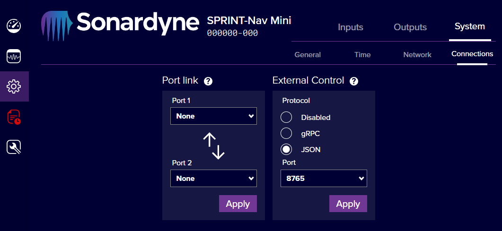

Quick Start
Choice of Technology
See Technology Explainer for more information on the two available API choices for Command and Control. gRPC and JSON will both support control of Sonardyne instruments listed here. However, gRPC is a more expandable interface which will be extended to include real-time data and more configuration options, so is recommended for most integrations.
Connecting to the API
Configuring gRPC or JSON via Web UI
The 'External Control' page in the webUI (located under Configuration>System>Connections) allows selection of a gRPC or JSON interface. The JSON interface operates via any of the ports specified under the 'Network' tab, whereas the gRPC interface operates a TCP server on the port number specified in the webUI.
Network Ports
Please note there is currently no cross-validation between the gRPC server and the other Network ports, you must ensure that the gRPC port number is not already in use in the Network tab.
Example screenshot from SPRINT-Nav Mini Web UI 
{kind=link}
Accessing .proto files
The .proto files which define the API will be needed before messages can be sent or received via gRPC. These files can be downloaded from the Releases page of the son-idl repo. They can also be found in the idl folder of this repo, alongside an explanation of all fields, provided by the README.md in the idl folder.
Sending initial commands
The API implements three functions:
- GetVersion will return the API version number
- GetState will return the settings of the instrument
- SetState will update the instrument settings
Development/Debugging Tools
See external reference.
Development of a gRPC client
Python Example
These steps are largely based on the grpc Python tutorial.
- Install gRPC and gRPC tools (protoc and code generation):
python -m pip install grpcio grpcio-tools - Download .proto files and put them in a
protosdirectory in your python project. - Generate python code from the .protos:
python -m grpc_tools.protoc --proto_path=./protos --python_out=. --grpc_python_out=. ./protos/*.proto
This will generate a few files - as a grpc client we are primarily interested in importing service_pb2_grpc, which will allow us to use GetState, SetState, and GetVersion.
Example python code
#Copyright 2023 Sonardyne
#Permission is hereby granted, free of charge, to any person obtaining a copy of this software and associated
#documentation files (the “Software”), to deal in the Software without restriction, including without limitation the
#rights to use, copy, modify, merge, publish, distribute, sublicense, and/or sell copies of the Software, and to
#permit persons to whom the Software is furnished to do so, subject to the following conditions:
#The above copyright notice and this permission notice shall be included in all copies or substantial portions of the
#Software.
#THE SOFTWARE IS PROVIDED “AS IS”, WITHOUT WARRANTY OF ANY KIND, EXPRESS OR IMPLIED, INCLUDING BUT NOT LIMITED TO THE
#WARRANTIES OF MERCHANTABILITY, FITNESS FOR A PARTICULAR PURPOSE AND NONINFRINGEMENT. IN NO EVENT SHALL THE AUTHORS OR
#COPYRIGHT HOLDERS BE LIABLE FOR ANY CLAIM, DAMAGES OR OTHER LIABILITY, WHETHER IN AN ACTION OF CONTRACT, TORT OR
#OTHERWISE, ARISING FROM, OUT OF OR IN CONNECTION WITH THE SOFTWARE OR THE USE OR OTHER DEALINGS IN THE SOFTWARE.
import grpc
import service_pb2_grpc
import version_pb2
import configuration_pb2
def SetExampleState(stub):
# Create a device configuration. This contains configurations for Reset, Aiding, Sound Velocity, and DVL
config = configuration_pb2.Configuration()
# Each type of configuration is stored as a list. This is reserved for future use as not all units support multiple configurations.
# Create and add a reset config to perform a soft reset
reset_config = configuration_pb2.ResetConfiguration(reset_type="SOFT_RESET")
config.reset_configurations.append(reset_config)
# Create and add an aiding config to enable GNSS aiding and disable USBL aiding
aiding_config_enable_gnss = configuration_pb2.AidingConfiguration(enable_gnss="ENABLED", enable_usbl="DISABLED")
config.aiding_configurations.append(aiding_config_enable_gnss)
# Create and add a sound velocity config to set the SV source to salinity-derived and set the SV salinity to an arbitrary value
sv_config_salinity_derived = configuration_pb2.SoundVelocityConfiguration(sound_velocity_type="INTERNAL_SALINITY", manual_salinity_value=32.1)
config.sound_velocity_configurations.append(sv_config_salinity_derived)
# Create and add a DVL config to set the update rate to an arbitrary choice
dvl_config_1Hz = configuration_pb2.DopplerVelocityLogConfiguration(update_rate="FIXED_1HZ")
config.doppler_velocity_configurations.append(dvl_config_1Hz)
# Create the envelope containing the new config.
# Envelopes also contain 'timestamp' and 'result' fields which are populated in the instrument reply.
config_envelope = configuration_pb2.ConfigurationEnvelope(configuration=config)
# Perform the SetState with the new envelope
result_envelope = stub.SetState(config_envelope)
# Returned envelope contains the current state of the updated settings, as well as a result field
print("Received ConfigurationEnvelope reply:\n{}".format(result_envelope))
with grpc.insecure_channel('127.0.0.1:1234') as channel: # NOTE: Change the IP Address and Port to match the Instrument and its gRPC configuration.
stub = service_pb2_grpc.SonardyneServiceStub(channel)
# Get the version number of the API
version_result = stub.GetVersion(version_pb2.VersionRequest())
print("Called GetVersion: v{}.{}".format(version_result.Major, version_result.Minor))
# Get the current state of the instrument
result_config_envelope = stub.GetState(configuration_pb2.ConfigurationRequest(requestor="PyGrpcClient"))
print("Called GetState:\n{}".format(result_config_envelope))
# For example, get the current GNSS aiding state
result_config = result_config_envelope.configuration
result_aiding_configuration = result_config.aiding_configurations[0]
result_gnss_aiding_state = result_aiding_configuration.enable_gnss
print("GNSS aiding state: {}".format(result_gnss_aiding_state))
# Set an example state
SetExampleState(stub)
C# Example
The recommended implementation for gRPC with .NET is now grpc-dotnet. Microsoft provide a tutorial on its use.
The .csproj file needs to be modified to include the proto files and proto directory, and to specify the project as a gRPC client, e.g.
<Protobuf Include="service.proto" ProtoRoot="protos/" GrpcServices="Client"/>
Note that a wildcard * can be used e.g. Include="*.proto", however this was found to cause problems with certain ProtoRoot directories and be less clear when debugging.
Example C# code
<Project Sdk="Microsoft.NET.Sdk">
<PropertyGroup>
<OutputType>Exe</OutputType>
<TargetFramework>net6.0</TargetFramework>
<ImplicitUsings>enable</ImplicitUsings>
<Nullable>enable</Nullable>
</PropertyGroup>
<ItemGroup>
<PackageReference Include="Google.Protobuf" Version="3.24.0" />
<PackageReference Include="Grpc.Net.client" Version="2.55.0" />
<PackageReference Include="Grpc.Tools" Version="2.57.0">
<PrivateAssets>all</PrivateAssets>
<IncludeAssets>runtime; build; native; contentfiles; analyzers; buildtransitive</IncludeAssets>
</PackageReference>
<Protobuf Include="configuration.proto" ProtoRoot="../../idl/" GrpcServices="Client"/>
<Protobuf Include="result.proto" ProtoRoot="../../idl/" GrpcServices="Client"/>
<Protobuf Include="service.proto" ProtoRoot="../../idl/" GrpcServices="Client"/>
<Protobuf Include="timestamp.proto" ProtoRoot="../../idl/" GrpcServices="Client"/>
<Protobuf Include="uid.proto" ProtoRoot="../../idl/" GrpcServices="Client"/>
<Protobuf Include="version.proto" ProtoRoot="../../idl/" GrpcServices="Client"/>
</ItemGroup>
</Project>
//Copyright 2023 Sonardyne
//Permission is hereby granted, free of charge, to any person obtaining a copy of this software and associated
//documentation files (the “Software”), to deal in the Software without restriction, including without limitation the
//rights to use, copy, modify, merge, publish, distribute, sublicense, and/or sell copies of the Software, and to
//permit persons to whom the Software is furnished to do so, subject to the following conditions:
//The above copyright notice and this permission notice shall be included in all copies or substantial portions of the
//Software.
//THE SOFTWARE IS PROVIDED “AS IS”, WITHOUT WARRANTY OF ANY KIND, EXPRESS OR IMPLIED, INCLUDING BUT NOT LIMITED TO THE
//WARRANTIES OF MERCHANTABILITY, FITNESS FOR A PARTICULAR PURPOSE AND NONINFRINGEMENT. IN NO EVENT SHALL THE AUTHORS OR
//COPYRIGHT HOLDERS BE LIABLE FOR ANY CLAIM, DAMAGES OR OTHER LIABILITY, WHETHER IN AN ACTION OF CONTRACT, TORT OR
//OTHERWISE, ARISING FROM, OUT OF OR IN CONNECTION WITH THE SOFTWARE OR THE USE OR OTHER DEALINGS IN THE SOFTWARE.
using Grpc.Net.Client;
using SonardyneApi;
GrpcChannel channel = GrpcChannel.ForAddress("http://127.0.0.1:1234"); // NOTE: Change the IP Address and Port to match the Instrument and its gRPC configuration.
SonardyneService.SonardyneServiceClient client = new SonardyneService.SonardyneServiceClient(channel);
// Get the version number of the API
var getVersionReply = client.GetVersion(new VersionRequest());
Console.WriteLine($"\nCalled GetVersion: v.{getVersionReply.Major}.{getVersionReply.Minor}");
// Get the current state of the instrument
var getStateReply = client.GetState(new ConfigurationRequest());
Console.WriteLine("\nCalled GetState:\n" + getStateReply.Configuration.ToString());
if (getStateReply.Configuration.AidingConfigurations.Count > 0)
{
Console.WriteLine("\ne.g. GNSS aiding state: " + getStateReply.Configuration.AidingConfigurations[0].EnableGnss);
}
// Create a device configuration. This contains configurations for Reset, Aiding, Sound Velocity, and DVL
var config = new Configuration();
// Each type of config is stored as a list. This is reserved for future use as not all units support multiple configurations.
// Create and add a reset config to perform a soft reset
var resetConfig = new ResetConfiguration();
resetConfig.ResetType = ResetConfiguration.Types.RESET_TYPE.SoftReset;
config.ResetConfigurations.Add(resetConfig);
// Create and add an aiding config to enable GNSS aiding and disable USBL aiding
var aidingConfig = new AidingConfiguration();
aidingConfig.EnableGnss = AidingConfiguration.Types.AIDING_STATE.Enabled;
aidingConfig.EnableUsbl = AidingConfiguration.Types.AIDING_STATE.Disabled;
config.AidingConfigurations.Add(aidingConfig);
// Create and add a sound velocity config to set the SV source to salinity-derived and set the SV salinity to an arbitrary value
var svConfig = new SoundVelocityConfiguration();
svConfig.SoundVelocityType = SoundVelocityConfiguration.Types.SOUND_VELOCITY.InternalSalinity;
svConfig.ManualSalinityValue = 32.1;
config.SoundVelocityConfigurations.Add(svConfig);
// Create and add a DVL config to set the update rate to an arbitrary choice
var dvlConfig = new DopplerVelocityLogConfiguration();
dvlConfig.UpdateRate = DopplerVelocityLogConfiguration.Types.UPDATE_RATE.Fixed1Hz;
config.DopplerVelocityConfigurations.Add(dvlConfig);
// Create the envelope containing the new config.
// Envelopes also contain 'timestamp' and 'result' fields which are populated in the instrument reply.
var configEnvelope = new ConfigurationEnvelope();
configEnvelope.Configuration = config;
Console.WriteLine($"\nCreated an example ConfigurationEnvelope:\n{configEnvelope}\nSending now...");
// Perform the SetState with the new envelope
var replyEnvelope = client.SetState(configEnvelope);
// Returned envelope contains the current state of the updated settings, as well as a result field
Console.WriteLine($"\nReceived ConfigurationEnvelope reply:\n{replyEnvelope}");
C++ Example
As C++ has no universally accepted standard for managing project dependencies, gRPC supports several methods.
The supplied C++ example code makes use of cmake, using find_package. This can only find software installed on your system, so gRPC will need to be installed from source using cmake. The installation location will then be referenced in cmake options to allow find_package to work.
The .proto files can be built automatically using a custom command in cmake, as per the example code below. Alternatively, the source/header files can be generated from the .proto files manually with the following command:
protoc --cpp_out=./proto-cpp-out/ --grpc_out=./proto-cpp-out/ --proto_path=protos/ protos/*.proto
--cpp_outspecifies where to put the generated proto source/header files--grpc_outspecifies where to put the generated grpc source/header files--proto_pathspecifies where the .proto files are located (used when proto files reference each other)- The final parameter specifies the .proto file(s) to be compiled.
protoc may require an extra parameter to specify the location of the gRPC C++ plugin, for example under Linux this could be:
--plugin=protoc-gen-grpc='which grpc_cpp_plugin'
The example client code below made use of this guide.
Example C++ code
#Copyright 2023 Sonardyne
#Permission is hereby granted, free of charge, to any person obtaining a copy of this software and associated
#documentation files (the “Software”), to deal in the Software without restriction, including without limitation the
#rights to use, copy, modify, merge, publish, distribute, sublicense, and/or sell copies of the Software, and to
#permit persons to whom the Software is furnished to do so, subject to the following conditions:
#The above copyright notice and this permission notice shall be included in all copies or substantial portions of the
#Software.
#THE SOFTWARE IS PROVIDED “AS IS”, WITHOUT WARRANTY OF ANY KIND, EXPRESS OR IMPLIED, INCLUDING BUT NOT LIMITED TO THE
#WARRANTIES OF MERCHANTABILITY, FITNESS FOR A PARTICULAR PURPOSE AND NONINFRINGEMENT. IN NO EVENT SHALL THE AUTHORS OR
#COPYRIGHT HOLDERS BE LIABLE FOR ANY CLAIM, DAMAGES OR OTHER LIABILITY, WHETHER IN AN ACTION OF CONTRACT, TORT OR
#OTHERWISE, ARISING FROM, OUT OF OR IN CONNECTION WITH THE SOFTWARE OR THE USE OR OTHER DEALINGS IN THE SOFTWARE.
cmake_minimum_required(VERSION 3.26)
project(grpc_proto_example_cpp)
set(CMAKE_CXX_STANDARD 17)
find_package(Protobuf CONFIG REQUIRED)
message("Protobuf v" ${Protobuf_VERSION})
if(CMAKE_CROSSCOMPILING)
find_program(_PROTOBUF_PROTOC protoc)
else()
set(_PROTOBUF_PROTOC $<TARGET_FILE:protobuf::protoc>)
endif()
find_package(gRPC CONFIG REQUIRED)
message("gRPC v" ${gRPC_VERSION})
if(CMAKE_CROSSCOMPILING)
find_program(_GRPC_CPP_PLUGIN_EXECUTABLE grpc_cpp_plugin)
else()
set(_GRPC_CPP_PLUGIN_EXECUTABLE $<TARGET_FILE:gRPC::grpc_cpp_plugin>)
endif()
add_subdirectory(src)
#Copyright 2023 Sonardyne
#Permission is hereby granted, free of charge, to any person obtaining a copy of this software and associated
#documentation files (the “Software”), to deal in the Software without restriction, including without limitation the
#rights to use, copy, modify, merge, publish, distribute, sublicense, and/or sell copies of the Software, and to
#permit persons to whom the Software is furnished to do so, subject to the following conditions:
#The above copyright notice and this permission notice shall be included in all copies or substantial portions of the
#Software.
#THE SOFTWARE IS PROVIDED “AS IS”, WITHOUT WARRANTY OF ANY KIND, EXPRESS OR IMPLIED, INCLUDING BUT NOT LIMITED TO THE
#WARRANTIES OF MERCHANTABILITY, FITNESS FOR A PARTICULAR PURPOSE AND NONINFRINGEMENT. IN NO EVENT SHALL THE AUTHORS OR
#COPYRIGHT HOLDERS BE LIABLE FOR ANY CLAIM, DAMAGES OR OTHER LIABILITY, WHETHER IN AN ACTION OF CONTRACT, TORT OR
#OTHERWISE, ARISING FROM, OUT OF OR IN CONNECTION WITH THE SOFTWARE OR THE USE OR OTHER DEALINGS IN THE SOFTWARE.
# Compile the .proto files
foreach(_proto configuration result service timestamp uid version)
get_filename_component(${_proto}_proto "../protos/${_proto}.proto" ABSOLUTE)
get_filename_component(${_proto}_proto_path "${${_proto}_proto}" PATH)
set(${_proto}_proto_sources "${CMAKE_CURRENT_BINARY_DIR}/${_proto}.pb.cc")
set(${_proto}_proto_headers "${CMAKE_CURRENT_BINARY_DIR}/${_proto}.pb.h")
set(${_proto}_grpc_sources "${CMAKE_CURRENT_BINARY_DIR}/${_proto}.grpc.pb.cc")
set(${_proto}_grpc_headers "${CMAKE_CURRENT_BINARY_DIR}/${_proto}.grpc.pb.h")
add_custom_command(
OUTPUT "${${_proto}_proto_sources}" "${${_proto}_proto_headers}" "${${_proto}_grpc_sources}" "${${_proto}_grpc_headers}"
COMMAND ${_PROTOBUF_PROTOC}
ARGS --grpc_out "${CMAKE_CURRENT_BINARY_DIR}" --cpp_out "${CMAKE_CURRENT_BINARY_DIR}"
-I "${${_proto}_proto_path}"
--plugin=protoc-gen-grpc="${_GRPC_CPP_PLUGIN_EXECUTABLE}"
"${${_proto}_proto}"
DEPENDS "${${_proto}_proto}")
endforeach()
include_directories(${CMAKE_CURRENT_BINARY_DIR})
add_library(son_grpc_proto
${configuration_proto_sources}
${configuration_proto_headers}
${configuration_grpc_sources}
${configuration_grpc_headers}
${result_proto_sources}
${result_proto_headers}
${result_grpc_sources}
${result_grpc_headers}
${service_proto_sources}
${service_proto_headers}
${service_grpc_sources}
${service_grpc_headers}
${timestamp_proto_sources}
${timestamp_proto_headers}
${timestamp_grpc_sources}
${timestamp_grpc_headers}
${uid_proto_sources}
${uid_proto_headers}
${uid_grpc_sources}
${uid_grpc_headers}
${version_proto_sources}
${version_proto_headers}
${version_grpc_sources}
${version_grpc_headers})
target_link_libraries(son_grpc_proto
gRPC::grpc++)
add_executable(son_grpc_client
main.cpp)
target_link_libraries(son_grpc_client
son_grpc_proto
gRPC::grpc++)
//Copyright 2023 Sonardyne
//Permission is hereby granted, free of charge, to any person obtaining a copy of this software and associated
//documentation files (the “Software”), to deal in the Software without restriction, including without limitation the
//rights to use, copy, modify, merge, publish, distribute, sublicense, and/or sell copies of the Software, and to
//permit persons to whom the Software is furnished to do so, subject to the following conditions:
//The above copyright notice and this permission notice shall be included in all copies or substantial portions of the
//Software.
//THE SOFTWARE IS PROVIDED “AS IS”, WITHOUT WARRANTY OF ANY KIND, EXPRESS OR IMPLIED, INCLUDING BUT NOT LIMITED TO THE
//WARRANTIES OF MERCHANTABILITY, FITNESS FOR A PARTICULAR PURPOSE AND NONINFRINGEMENT. IN NO EVENT SHALL THE AUTHORS OR
//COPYRIGHT HOLDERS BE LIABLE FOR ANY CLAIM, DAMAGES OR OTHER LIABILITY, WHETHER IN AN ACTION OF CONTRACT, TORT OR
//OTHERWISE, ARISING FROM, OUT OF OR IN CONNECTION WITH THE SOFTWARE OR THE USE OR OTHER DEALINGS IN THE SOFTWARE.
#include <iostream>
#include <grpc/grpc.h>
#include <grpcpp/channel.h>
#include <grpcpp/client_context.h>
#include <grpcpp/create_channel.h>
#include <grpcpp/security/credentials.h>
#include "service.pb.h"
#include "service.grpc.pb.h"
class SonGrpcClient {
public:
SonGrpcClient(std::string target_ipport) :
_channel(grpc::CreateChannel(target_ipport, grpc::InsecureChannelCredentials())),
_stub(sonardyne::api::SonardyneService::NewStub(_channel)) {
}
void PrintVersion() {
std::cout << "Calling GetVersion..." << std::endl;
sonardyne::api::VersionRequest version_request;
sonardyne::api::VersionResponse version_response;
grpc::ClientContext client_context;
grpc::Status get_version_status = _stub->GetVersion(&client_context, version_request, &version_response);
if (get_version_status.ok()) {
std::cout << "Called GetVersion: V" << version_response.major() << "." << version_response.minor() << std::endl;
}
else {
std::cout << "GetVersion failed." << std::endl;
}
}
void PrintAidingStates() {
sonardyne::api::ConfigurationRequest config_request;
config_request.set_requestor(_requestor_name);
sonardyne::api::ConfigurationEnvelope config_envelope;
grpc::ClientContext client_context;
std::cout << "Calling GetState..." << std::endl;
grpc::Status get_state_status = _stub->GetState(&client_context, config_request, &config_envelope);
if (get_state_status.ok()) {
sonardyne::api::AidingConfiguration_AIDING_STATE gnss_state = config_envelope.configuration().aiding_configurations()[0].enable_gnss();
sonardyne::api::AidingConfiguration_AIDING_STATE xpos_state = config_envelope.configuration().aiding_configurations()[0].enable_xpos();
sonardyne::api::AidingConfiguration_AIDING_STATE usbl_state = config_envelope.configuration().aiding_configurations()[0].enable_usbl();
std::cout << "Called GetState:" << std::endl;
PrintAnAidingState("GNSS", gnss_state);
PrintAnAidingState("XPOS", xpos_state);
PrintAnAidingState("USBL", usbl_state);
}
else {
std::cout << "GetState Failed." << std::endl;
}
}
grpc::Status SetState(sonardyne::api::ConfigurationEnvelope request_config_envelope) {
sonardyne::api::ConfigurationEnvelope response_config_envelope;
grpc::ClientContext client_context;
std::cout << "Calling SetState..." << std::endl;
return _stub->SetState(&client_context, request_config_envelope, &response_config_envelope);
}
private:
std::shared_ptr<grpc::Channel> _channel;
std::unique_ptr<sonardyne::api::SonardyneService::Stub> _stub;
std::string _requestor_name = "C++ Client";
void PrintAnAidingState(std::string aiding_source, sonardyne::api::AidingConfiguration_AIDING_STATE aiding_state) {
if (aiding_state == sonardyne::api::AidingConfiguration_AIDING_STATE_ENABLED) {
std::cout << aiding_source << " Aiding is enabled." << std::endl;
}
else if (aiding_state == sonardyne::api::AidingConfiguration_AIDING_STATE_DISABLED) {
std::cout << aiding_source << " Aiding is disabled." << std::endl;
}
else {
std::cout << aiding_source << " Aiding state unknown." << std::endl;
}
}
};
int main (int argc, char *argv[]) {
SonGrpcClient client("127.0.0.1:1234"); // NOTE: Change the IP Address and Port to match the Instrument and its gRPC configuration.
client.PrintVersion();
client.PrintAidingStates();
sonardyne::api::ConfigurationEnvelope request_config_envelope;
sonardyne::api::AidingConfiguration *aiding_config = request_config_envelope.mutable_configuration()->add_aiding_configurations();
aiding_config->set_enable_gnss(sonardyne::api::AidingConfiguration_AIDING_STATE_ENABLED);
aiding_config->set_enable_xpos(sonardyne::api::AidingConfiguration_AIDING_STATE_ENABLED);
aiding_config->set_enable_usbl(sonardyne::api::AidingConfiguration_AIDING_STATE_ENABLED);
grpc::Status setstate_status = client.SetState(request_config_envelope);
client.PrintAidingStates();
return 0;
}